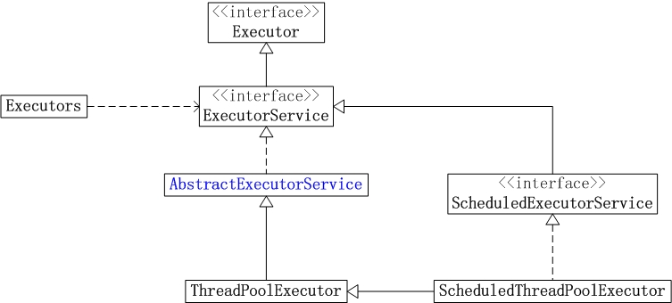
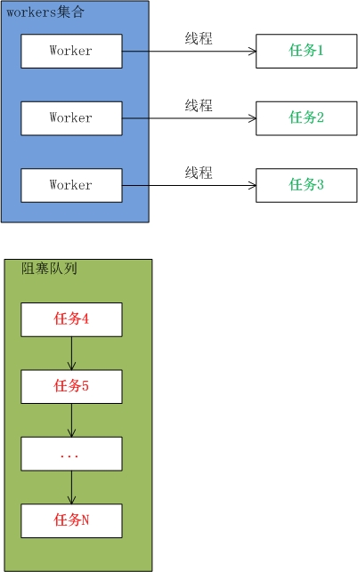
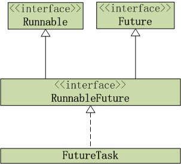

JUC线程池 
1 2 3 4 5 6 7 8 9 10 11 12 13 14 15 16 17 18 19 20 21 22 23 24 25 26 27 1. Executor它是"执行者" 接口，它是来执行任务的。准确的说，Executor提供了execute()接口来执行已提交的 Runnable 任务的对象。Executor存在的目的是提供一种将"任务提交" 与"任务如何运行" 分离开来的机制。 它只包含一个函数接口： void execute (Runnable command) 2. ExecutorServiceExecutorService继承于Executor。它是"执行者服务" 接口，它是为"执行者接口Executor" 服务而存在的；准确的话，ExecutorService提供了"将任务提交给执行者的接口(submit方法)" ，"让执行者执行任务(invokeAll, invokeAny方法)" 的接口等等。 3. AbstractExecutorServiceAbstractExecutorService是一个抽象类，它实现了ExecutorService接口。 AbstractExecutorService存在的目的是为ExecutorService中的函数接口提供了默认实现。 AbstractExecutorService函数列表 由于它的函数列表和ExecutorService一样，这里就不再重复列举了。 4. ThreadPoolExecutorThreadPoolExecutor就是大名鼎鼎的"线程池" 。它继承于AbstractExecutorService抽象类。 5. ScheduledExecutorServiceScheduledExecutorService是一个接口，它继承于于ExecutorService。它相当于提供了"延时" 和"周期执行" 功能的ExecutorService。 ScheduledExecutorService提供了相应的函数接口，可以安排任务在给定的延迟后执行，也可以让任务周期的执行。 6. ScheduledThreadPoolExecutorScheduledThreadPoolExecutor继承于ThreadPoolExecutor，并且实现了ScheduledExecutorService接口。它相当于提供了"延时" 和"周期执行" 功能的ScheduledExecutorService。 ScheduledThreadPoolExecutor类似于Timer，但是在高并发程序中，ScheduledThreadPoolExecutor的性能要优于Timer。 7. ExecutorsExecutors是个静态工厂类。它通过静态工厂方法返回ExecutorService、ScheduledExecutorService、ThreadFactory 和 Callable 等类的对象。
线程池示例 1 2 3 4 5 6 7 8 9 10 11 12 13 14 15 16 17 18 19 20 21 22 23 24 25 26 27 28 29 30 31 32 33 34 35 36 37 38 39 40 import java.util.concurrent.Executors;import java.util.concurrent.ExecutorService;public class ThreadPoolDemo1 { public static void main (String[] args) { ExecutorService pool = Executors.newFixedThreadPool(2 ); Thread ta = new MyThread (); Thread tb = new MyThread (); Thread tc = new MyThread (); Thread td = new MyThread (); Thread te = new MyThread (); pool.execute(ta); pool.execute(tb); pool.execute(tc); pool.execute(td); pool.execute(te); pool.shutdown(); } } class MyThread extends Thread { @Override public void run () { System.out.println(Thread.currentThread().getName()+ " is running." ); } } 运行结果： pool-1 -thread-1 is running. pool-1 -thread-2 is running. pool-1 -thread-1 is running. pool-1 -thread-2 is running. pool-1 -thread-1 is running. 结果说明： 主线程中创建了线程池pool，线程池的容量是2 。即，线程池中最多能同时运行2 个线程。 紧接着，将ta,tb,tc,td,te这3 个线程添加到线程池中运行。 最后，通过shutdown()关闭线程池。
线程池原理(上) ThreadPoolExecutor简介 ThreadPoolExecutor是线程池类。对于线程池，可以通俗的将它理解为”存放一定数量线程的一个线程集合。线程池允许若个线程同时允许，允许同时运行的线程数量就是线程池的容量；当添加的到线程池中的线程超过它的容量时，会有一部分线程阻塞等待。线程池会通过相应的调度策略和拒绝策略，对添加到线程池中的线程进行管理。”
1 2 3 4 5 6 7 8 9 10 11 12 13 14 15 16 17 18 19 20 21 22 23 private final BlockingQueue<Runnable> workQueue;private final ReentrantLock mainLock = new ReentrantLock ();private final HashSet<Worker> workers = new HashSet <Worker>();private final Condition termination = mainLock.newCondition();private int largestPoolSize;private long completedTaskCount;private volatile ThreadFactory threadFactory;private volatile RejectedExecutionHandler handler;private volatile long keepAliveTime;private volatile boolean allowCoreThreadTimeOut;private volatile int corePoolSize;private volatile int maximumPoolSize;
workers 类型，即它是一个Worker集合。而一个Worker对应一个线程，也就是说线程池通过workers包含了”一个线程集合”。当Worker对应的线程池启动时，它会执行线程池中的任务；当执行完一个任务后，它会从线程池的阻塞队列中取出一个阻塞的任务来继续运行。
workQueue
mainLock
corePoolSize和maximumPoolSize
poolSize
allowCoreThreadTimeOut和keepAliveTime
threadFactory
handler
综上所说，线程池通过workers来管理”线程集合”，每个线程在启动后，会执行线程池中的任务；当一个任务执行完后，它会从线程池的阻塞队列中取出任务来继续运行。阻塞队列是管理线程池任务的队列，当添加到线程池中的任务超过线程池的容量时，该任务就会进入阻塞队列进行等待。
线程池调度 
说明 ：
线程池示例 1 2 3 4 5 6 7 8 9 10 11 12 13 14 15 16 17 18 19 20 21 22 23 24 25 26 27 28 29 30 31 32 33 34 35 36 37 38 import java.util.concurrent.Executors;import java.util.concurrent.ExecutorService;public class ThreadPoolDemo1 { public static void main (String[] args) { ExecutorService pool = Executors.newFixedThreadPool(2 ); Thread ta = new MyThread (); Thread tb = new MyThread (); Thread tc = new MyThread (); Thread td = new MyThread (); Thread te = new MyThread (); pool.execute(ta); pool.execute(tb); pool.execute(tc); pool.execute(td); pool.execute(te); pool.shutdown(); } } class MyThread extends Thread { @Override public void run () { System.out.println(Thread.currentThread().getName()+ " is running." ); } } 运行结果： pool-1 -thread-1 is running. pool-1 -thread-2 is running. pool-1 -thread-1 is running. pool-1 -thread-2 is running. pool-1 -thread-1 is running. 示例中，包括了线程池的创建，将任务添加到线程池中，关闭线程池这3 个主要的步骤。
创建线程池 1 2 3 4 5 6 7 8 9 10 11 12 13 14 15 16 17 18 19 20 21 22 23 24 25 26 27 28 29 30 31 32 33 34 35 36 37 1. newFixedThreadPool()newFixedThreadPool()在Executors.java中定义，源码如下： public static ExecutorService newFixedThreadPool (int nThreads) { return new ThreadPoolExecutor (nThreads, nThreads, 0L , TimeUnit.MILLISECONDS, new LinkedBlockingQueue <Runnable>()); } 说明：newFixedThreadPool(int nThreads)的作用是创建一个线程池，线程池的容量是nThreads。 newFixedThreadPool()在调用ThreadPoolExecutor()时，会传递一个LinkedBlockingQueue()对象，而LinkedBlockingQueue是单向链表实现的阻塞队列。在线程池中，就是通过该阻塞队列来实现"当线程池中任务数量超过允许的任务数量时，部分任务会阻塞等待" 。 2. ThreadPoolExecutor()ThreadPoolExecutor()在ThreadPoolExecutor.java中定义，源码如下： public ThreadPoolExecutor (int corePoolSize, int maximumPoolSize, long keepAliveTime, TimeUnit unit, BlockingQueue<Runnable> workQueue) { this (corePoolSize, maximumPoolSize, keepAliveTime, unit, workQueue, Executors.defaultThreadFactory(), defaultHandler); } 说明：该函数实际上是调用ThreadPoolExecutor的另外一个构造函数。 说明：在ThreadPoolExecutor()的构造函数中，进行的是初始化工作。 corePoolSize, maximumPoolSize, unit, keepAliveTime和workQueue这些变量的值是已知的，它们都是通过newFixedThreadPool()传递而来。下面看看threadFactory和handler对象。 2.1 ThreadFactory线程池中的ThreadFactory是一个线程工厂，线程池创建线程都是通过线程工厂对象(threadFactory)来完成的。 上面所说的threadFactory对象，是通过 Executors.defaultThreadFactory()返回的。 public static ThreadFactory defaultThreadFactory () { return new DefaultThreadFactory (); } defaultThreadFactory()返回DefaultThreadFactory对象。 说明：ThreadFactory的作用就是提供创建线程的功能的线程工厂。 它是通过newThread()提供创建线程功能的，下面简单说说newThread()。newThread()创建的线程对应的任务是Runnable对象，它创建的线程都是“非守护线程”而且“线程优先级都是Thread.NORM_PRIORITY”。 2.2 RejectedExecutionHandlerhandler是ThreadPoolExecutor中拒绝策略的处理句柄。所谓拒绝策略，是指将任务添加到线程池中时，线程池拒绝该任务所采取的相应策略。 线程池默认会采用的是defaultHandler策略，即AbortPolicy策略。在AbortPolicy策略中，线程池拒绝任务时会抛出异常。
添加任务到线程池 1 2 3 4 5 6 7 8 9 10 11 12 13 14 15 1. execute()说明：execute()的作用是将任务添加到线程池中执行。它会分为3 种情况进行处理： 情况1 -- 如果"线程池中任务数量" < "核心池大小" 时，即线程池中少于corePoolSize个任务；此时就新建一个线程，并将该任务添加到线程中进行执行。 情况2 -- 如果"线程池中任务数量" >= "核心池大小" ，并且"线程池是允许状态" ；此时，则将任务添加到阻塞队列中阻塞等待。在该情况下，会再次确认"线程池的状态" ，如果"第2次读到的线程池状态" 和"第1次读到的线程池状态" 不同，则从阻塞队列中删除该任务。 情况3 -- 非以上两种情况。在这种情况下，尝试新建一个线程，并将该任务添加到线程中进行执行。如果执行失败，则通过reject()拒绝该任务。 2. addWorker()说明：addWorker(Runnable firstTask, boolean core) 的作用是将任务(firstTask)添加到线程池中，并启动该任务。 core为true 的话，则以corePoolSize为界限，若"线程池中已有任务数量>=corePoolSize" ，则返回false ；core为false 的话，则以maximumPoolSize为界限，若"线程池中已有任务数量>=maximumPoolSize" ，则返回false 。 addWorker()会先通过for 循环不断尝试更新ctl状态，ctl记录了"线程池中任务数量和线程池状态" 。 更新成功之后，再通过try 模块来将任务添加到线程池中，并启动任务所在的线程。 从addWorker()中，我们能清晰的发现：线程池在添加任务时，会创建任务对应的Worker对象；而一个Workder对象包含一个Thread对象。(01 ) 通过将Worker对象添加到"线程的workers集合" 中，从而实现将任务添加到线程池中。 (02 ) 通过启动Worker对应的Thread线程，则执行该任务。 3. submit()补充说明一点，submit()实际上也是通过调用execute()实现的
关闭线程池 线程池原理(下) 1 线程有5种状态：新建状态，就绪状态，运行状态，阻塞状态，死亡状态。线程池也有5种状态；然而，线程池不同于线程，线程池的5种状态是：Running, SHUTDOWN, STOP, TIDYING, TERMINATED。
1 2 3 4 5 6 7 8 9 10 11 12 13 14 15 16 17 18 19 线程池状态定义代码如下： private final AtomicInteger ctl = new AtomicInteger (ctlOf(RUNNING, 0 ));private static final int COUNT_BITS = Integer.SIZE - 3 ;private static final int CAPACITY = (1 << COUNT_BITS) - 1 ;private static final int RUNNING = -1 << COUNT_BITS;private static final int SHUTDOWN = 0 << COUNT_BITS;private static final int STOP = 1 << COUNT_BITS;private static final int TIDYING = 2 << COUNT_BITS;private static final int TERMINATED = 3 << COUNT_BITS;private static int ctlOf (int rs, int wc) { return rs | wc; }说明： ctl是一个AtomicInteger类型的原子对象。ctl记录了"线程池中的任务数量" 和"线程池状态" 2 个信息。 ctl共包括32 位。其中，高3 位表示"线程池状态" ，低29 位表示"线程池中的任务数量" 。 RUNNING -- 对应的高3 位值是111 。 SHUTDOWN -- 对应的高3 位值是000 。 STOP -- 对应的高3 位值是001 。 TIDYING -- 对应的高3 位值是010 。 TERMINATED -- 对应的高3 位值是011 。
线程状态切换 RUNNING
(01) 状态说明：线程池处在RUNNING状态时，能够接收新任务，以及对已添加的任务进行处理。
1 private final AtomicInteger ctl = new AtomicInteger (ctlOf(RUNNING, 0 ))
SHUTDOWN
(01) 状态说明：线程池处在SHUTDOWN状态时，不接收新任务，但能处理已添加的任务。
STOP
(01) 状态说明：线程池处在STOP状态时，不接收新任务，不处理已添加的任务，并且会中断正在处理的任务。
TIDYING
TEMINATED
拒绝策略 线程池的拒绝策略，是指当任务添加到线程池中被拒绝，而采取的处理措施。
线程池共包括4种拒绝策略，它们分别是：AbortPolicy , CallerRunsPolicy , DiscardOldestPolicy 和DiscardPolicy 。
1 2 3 4 AbortPolicy -- 当任务添加到线程池中被拒绝时，它将抛出 RejectedExecutionException 异常。 CallerRunsPolicy -- 当任务添加到线程池中被拒绝时，会在线程池当前正在运行的Thread线程池中处理被拒绝的任务。 DiscardOldestPolicy -- 当任务添加到线程池中被拒绝时，线程池会放弃等待队列中最旧的未处理任务，然后将被拒绝的任务添加到等待队列中。 DiscardPolicy -- 当任务添加到线程池中被拒绝时，线程池将丢弃被拒绝的任务。
线程池默认的处理策略是AbortPolicy！
DiscardPolicy 示例 1 2 3 4 5 6 7 8 9 10 11 12 13 14 15 16 17 18 19 20 21 22 23 24 25 26 27 28 29 30 31 32 33 34 35 36 37 38 39 40 41 42 43 44 45 46 import java.lang.reflect.Field;import java.util.concurrent.ArrayBlockingQueue;import java.util.concurrent.ThreadPoolExecutor;import java.util.concurrent.TimeUnit;import java.util.concurrent.ThreadPoolExecutor.DiscardPolicy;public class DiscardPolicyDemo { private static final int THREADS_SIZE = 1 ; private static final int CAPACITY = 1 ; public static void main (String[] args) throws Exception { ThreadPoolExecutor pool = new ThreadPoolExecutor (THREADS_SIZE, THREADS_SIZE, 0 , TimeUnit.SECONDS, new ArrayBlockingQueue <Runnable>(CAPACITY)); pool.setRejectedExecutionHandler(new ThreadPoolExecutor .DiscardPolicy()); for (int i = 0 ; i < 10 ; i++) { Runnable myrun = new MyRunnable ("task-" +i); pool.execute(myrun); } pool.shutdown(); } } class MyRunnable implements Runnable { private String name; public MyRunnable (String name) { this .name = name; } @Override public void run () { try { System.out.println(this .name + " is running." ); Thread.sleep(100 ); } catch (Exception e) { e.printStackTrace(); } } } 运行结果： task-0 is running. task-1 is running. 结果说明：线程池pool的"最大池大小" 和"核心池大小" 都为1 (THREADS_SIZE)，这意味着"线程池能同时运行的任务数量最大只能是1" 。 线程池pool的阻塞队列是ArrayBlockingQueue，ArrayBlockingQueue是一个有界的阻塞队列，ArrayBlockingQueue的容量为1 。这也意味着线程池的阻塞队列只能有一个线程池阻塞等待。 根据"" 中分析的execute()代码可知：线程池中共运行了2 个任务。第1 个任务直接放到Worker中，通过线程去执行；第2 个任务放到阻塞队列中等待。其他的任务都被丢弃了！
DiscardOldestPolicy 示例 1 2 3 4 5 6 7 8 9 10 11 12 13 14 15 16 17 18 19 20 21 22 23 24 25 26 27 28 29 30 31 32 33 34 35 36 37 38 39 40 41 42 43 44 45 import java.lang.reflect.Field;import java.util.concurrent.ArrayBlockingQueue;import java.util.concurrent.ThreadPoolExecutor;import java.util.concurrent.TimeUnit;import java.util.concurrent.ThreadPoolExecutor.DiscardOldestPolicy;public class DiscardOldestPolicyDemo { private static final int THREADS_SIZE = 1 ; private static final int CAPACITY = 1 ; public static void main (String[] args) throws Exception { ThreadPoolExecutor pool = new ThreadPoolExecutor (THREADS_SIZE, THREADS_SIZE, 0 , TimeUnit.SECONDS, new ArrayBlockingQueue <Runnable>(CAPACITY)); pool.setRejectedExecutionHandler(new ThreadPoolExecutor .DiscardOldestPolicy()); for (int i = 0 ; i < 10 ; i++) { Runnable myrun = new MyRunnable ("task-" +i); pool.execute(myrun); } pool.shutdown(); } } class MyRunnable implements Runnable { private String name; public MyRunnable (String name) { this .name = name; } @Override public void run () { try { System.out.println(this .name + " is running." ); Thread.sleep(200 ); } catch (Exception e) { e.printStackTrace(); } } } 运行结果： task-0 is running. task-9 is running. 结果说明：将"线程池的拒绝策略" 由DiscardPolicy修改为DiscardOldestPolicy之后，当有任务添加到线程池被拒绝时，线程池会丢弃阻塞队列中末尾的任务，然后将被拒绝的任务添加到末尾。
AbortPolicy 示例 1 2 3 4 5 6 7 8 9 10 11 12 13 14 15 16 17 18 19 20 21 22 23 24 25 26 27 28 29 30 31 32 33 34 35 36 37 38 39 40 41 42 43 44 45 46 47 48 49 50 51 52 53 54 55 56 57 58 59 60 61 import java.lang.reflect.Field;import java.util.concurrent.ArrayBlockingQueue;import java.util.concurrent.ThreadPoolExecutor;import java.util.concurrent.TimeUnit;import java.util.concurrent.ThreadPoolExecutor.AbortPolicy;import java.util.concurrent.RejectedExecutionException;public class AbortPolicyDemo { private static final int THREADS_SIZE = 1 ; private static final int CAPACITY = 1 ; public static void main (String[] args) throws Exception { ThreadPoolExecutor pool = new ThreadPoolExecutor (THREADS_SIZE, THREADS_SIZE, 0 , TimeUnit.SECONDS, new ArrayBlockingQueue <Runnable>(CAPACITY)); pool.setRejectedExecutionHandler(new ThreadPoolExecutor .AbortPolicy()); try { for (int i = 0 ; i < 10 ; i++) { Runnable myrun = new MyRunnable ("task-" +i); pool.execute(myrun); } } catch (RejectedExecutionException e) { e.printStackTrace(); pool.shutdown(); } } } class MyRunnable implements Runnable { private String name; public MyRunnable (String name) { this .name = name; } @Override public void run () { try { System.out.println(this .name + " is running." ); Thread.sleep(200 ); } catch (Exception e) { e.printStackTrace(); } } } (某一次)运行结果： java.util.concurrent.RejectedExecutionException at java.util.concurrent.ThreadPoolExecutor$AbortPolicy.rejectedExecution(ThreadPoolExecutor.java:1774 ) at java.util.concurrent.ThreadPoolExecutor.reject(ThreadPoolExecutor.java:768 ) at java.util.concurrent.ThreadPoolExecutor.execute(ThreadPoolExecutor.java:656 ) at AbortPolicyDemo.main(AbortPolicyDemo.java:27 ) task-0 is running. task-1 is running. 结果说明：将"线程池的拒绝策略" 由DiscardPolicy修改为AbortPolicy之后，当有任务添加到线程池被拒绝时，会抛出RejectedExecutionException。
CallerRunsPolicy 示例 1 2 3 4 5 6 7 8 9 10 11 12 13 14 15 16 17 18 19 20 21 22 23 24 25 26 27 28 29 30 31 32 33 34 35 36 37 38 39 40 41 42 43 44 45 46 47 48 49 50 51 52 import java.lang.reflect.Field;import java.util.concurrent.ArrayBlockingQueue;import java.util.concurrent.ThreadPoolExecutor;import java.util.concurrent.TimeUnit;import java.util.concurrent.ThreadPoolExecutor.CallerRunsPolicy;public class CallerRunsPolicyDemo { private static final int THREADS_SIZE = 1 ; private static final int CAPACITY = 1 ; public static void main (String[] args) throws Exception { ThreadPoolExecutor pool = new ThreadPoolExecutor (THREADS_SIZE, THREADS_SIZE, 0 , TimeUnit.SECONDS, new ArrayBlockingQueue <Runnable>(CAPACITY)); pool.setRejectedExecutionHandler(new ThreadPoolExecutor .CallerRunsPolicy()); for (int i = 0 ; i < 10 ; i++) { Runnable myrun = new MyRunnable ("task-" +i); pool.execute(myrun); } pool.shutdown(); } } class MyRunnable implements Runnable { private String name; public MyRunnable (String name) { this .name = name; } @Override public void run () { try { System.out.println(this .name + " is running." ); Thread.sleep(100 ); } catch (Exception e) { e.printStackTrace(); } } } (某一次)运行结果： task-2 is running. task-3 is running. task-4 is running. task-5 is running. task-6 is running. task-7 is running. task-8 is running. task-9 is running. task-0 is running. task-1 is running. 结果说明：将"线程池的拒绝策略" 由DiscardPolicy修改为CallerRunsPolicy之后，当有任务添加到线程池被拒绝时，线程池会将被拒绝的任务添加到"线程池正在运行的线程" 中取运行。
Callable和Future Callable 和 Future 是比较有趣的一对组合。当我们需要获取线程的执行结果时，就需要用到它们。Callable用于产生结果，Future用于获取结果。
1 2 3 4 5 6 7 8 9 10 11 12 1. CallableCallable 是一个接口，它只包含一个call()方法。Callable是一个返回结果并且可能抛出异常的任务。 为了便于理解，我们可以将Callable比作一个Runnable接口，而Callable的call()方法则类似于Runnable的run()方法。 Callable的源码如下： public interface Callable <V> { V call () throws Exception; } 说明：从中我们可以看出Callable支持泛型。 2. FuturejavaFuture 是一个接口。它用于表示异步计算的结果。提供了检查计算是否完成的方法，以等待计算的完成，并获取计算的结果。 说明：Future用于表示异步计算的结果。它的实现类是FutureTask，在讲解FutureTask之前，我们先看看Callable, Future, FutureTask它们之间的关系图，如下：

1 2 3 4 5 6 说明： (01 ) RunnableFuture是一个接口，它继承了Runnable和Future这两个接口。RunnableFuture的源码如下： public interface RunnableFuture <V> extends Runnable , Future<V> { void run () ; } (02 ) FutureTask实现了RunnableFuture接口。所以，我们也说它实现了Future接口。
Callable和Future的基本用法 1 2 3 4 5 6 7 8 9 10 11 12 13 14 15 16 17 18 19 20 21 22 23 24 25 26 27 28 29 30 31 32 33 34 35 36 import java.util.concurrent.Callable;import java.util.concurrent.Future;import java.util.concurrent.Executors;import java.util.concurrent.ExecutorService;import java.util.concurrent.ExecutionException;class MyCallable implements Callable { @Override public Integer call () throws Exception { int sum = 0 ; for (int i=0 ; i<100 ; i++) sum += i; return Integer.valueOf(sum); } } public class CallableTest1 { public static void main (String[] args) throws ExecutionException, InterruptedException{ ExecutorService pool = Executors.newSingleThreadExecutor(); Callable c1 = new MyCallable (); Future f1 = pool.submit(c1); System.out.println(f1.get()); pool.shutdown(); } } 运行结果： 4950 结果说明： 在主线程main中，通过newSingleThreadExecutor()新建一个线程池。接着创建Callable对象c1，然后再通过pool.submit(c1)将c1提交到线程池中进行处理，并且将返回的结果保存到Future对象f1中。然后，我们通过f1.get()获取Callable中保存的结果；最后通过pool.shutdown()关闭线程池。
1 2 3 4 5 6 7 8 9 10 11 12 13 14 15 16 17 18 19 20 21 1. submit()submit()在java/util/concurrent/AbstractExecutorService.java中实现 说明：submit()通过newTaskFor(task)创建了RunnableFuture对象ftask。它的源码如下： protected <T> RunnableFuture<T> newTaskFor (Callable<T> callable) { return new FutureTask <T>(callable); } 2. FutureTask的构造函数public FutureTask (Callable<V> callable) { if (callable == null ) throw new NullPointerException (); this .callable = callable; this .state = NEW; } 3. FutureTask的run()方法我们继续回到submit()的源码中。 在newTaskFor()新建一个ftask对象之后，会通过execute(ftask)执行该任务。此时ftask被当作一个Runnable对象进行执行，最终会调用到它的run()方法；ftask的run()方法在java/util/concurrent/FutureTask.java中实现， 说明：run()中会执行Callable对象的call()方法，并且最终将结果保存到result中，并通过set(result)将result保存。之后调用FutureTask的get()方法，返回的就是通过set(result)保存的值。